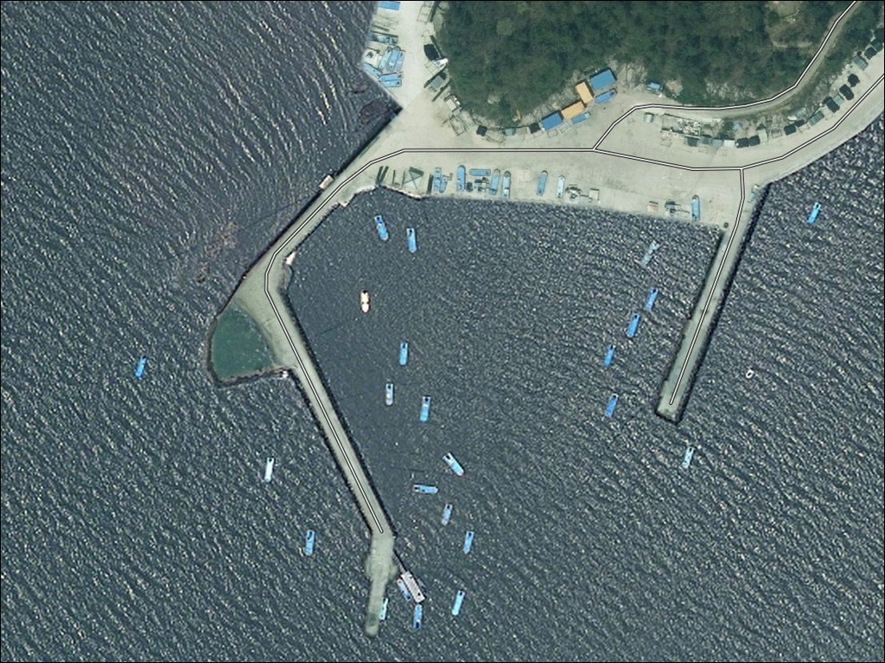
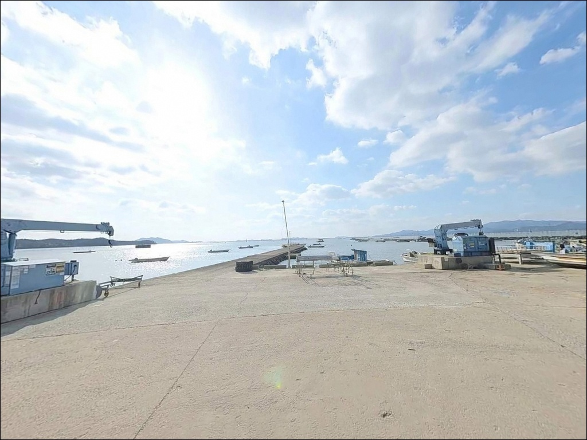
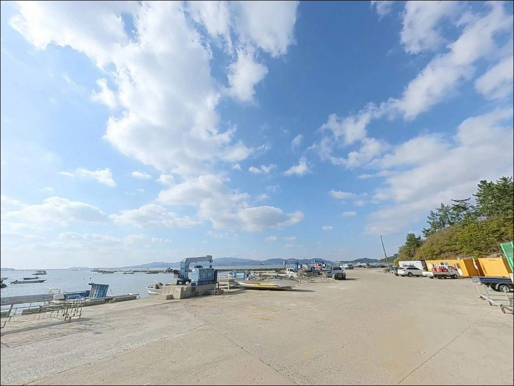
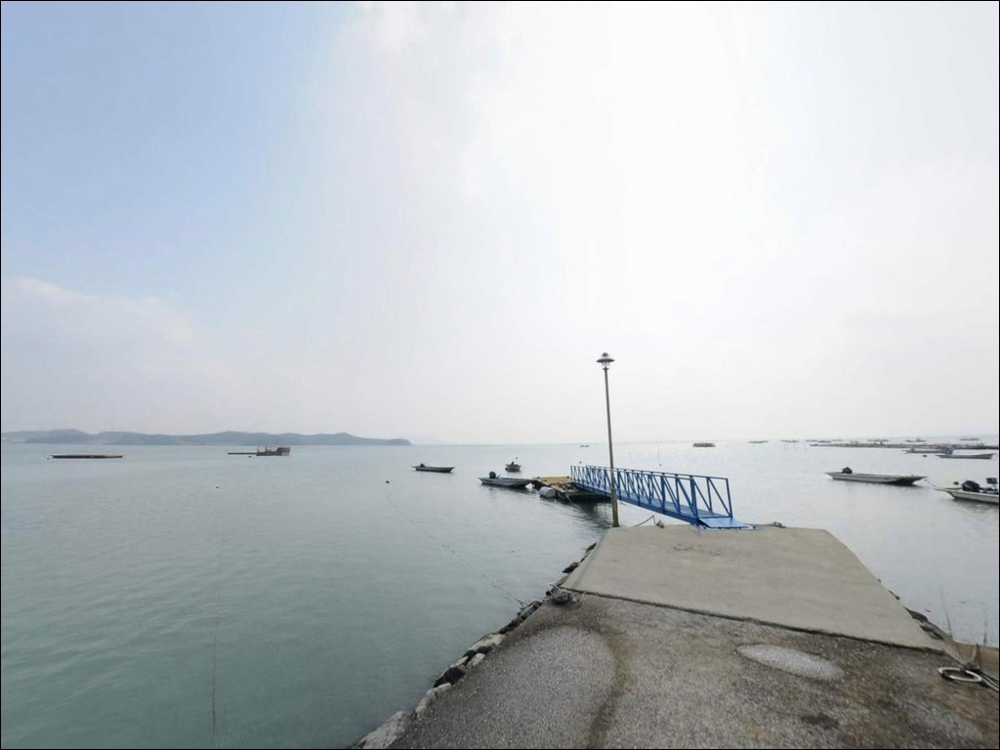
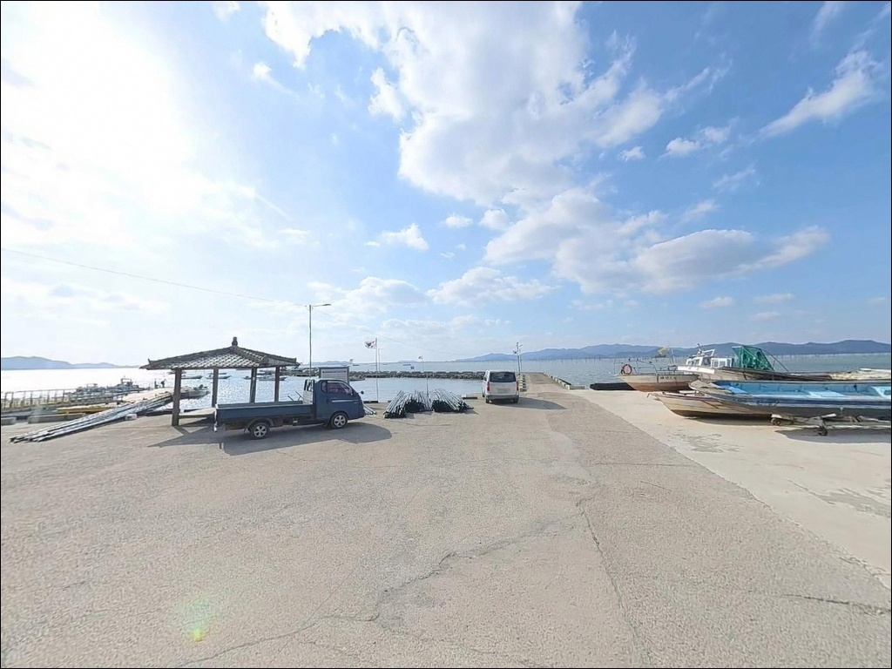
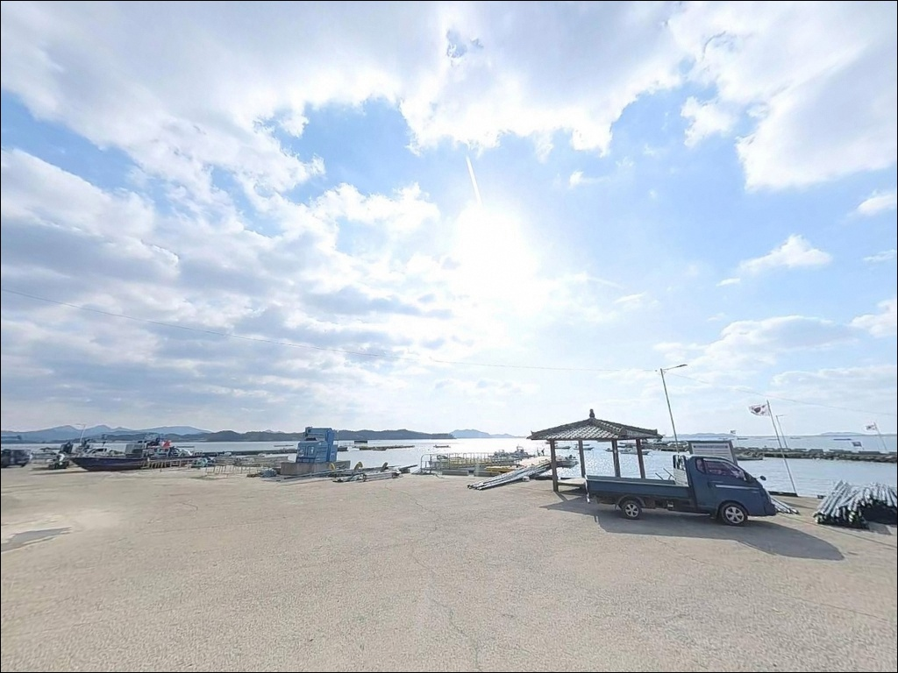
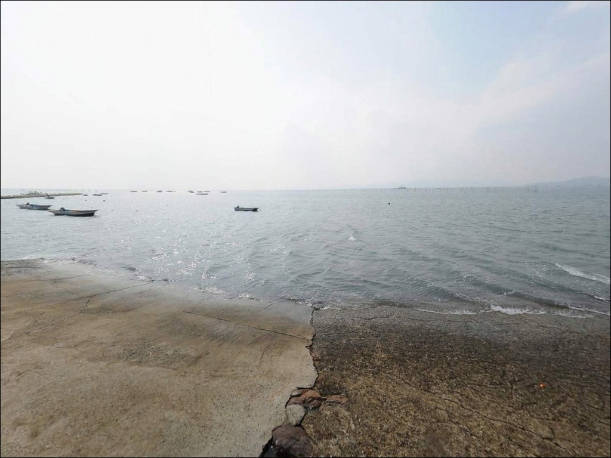
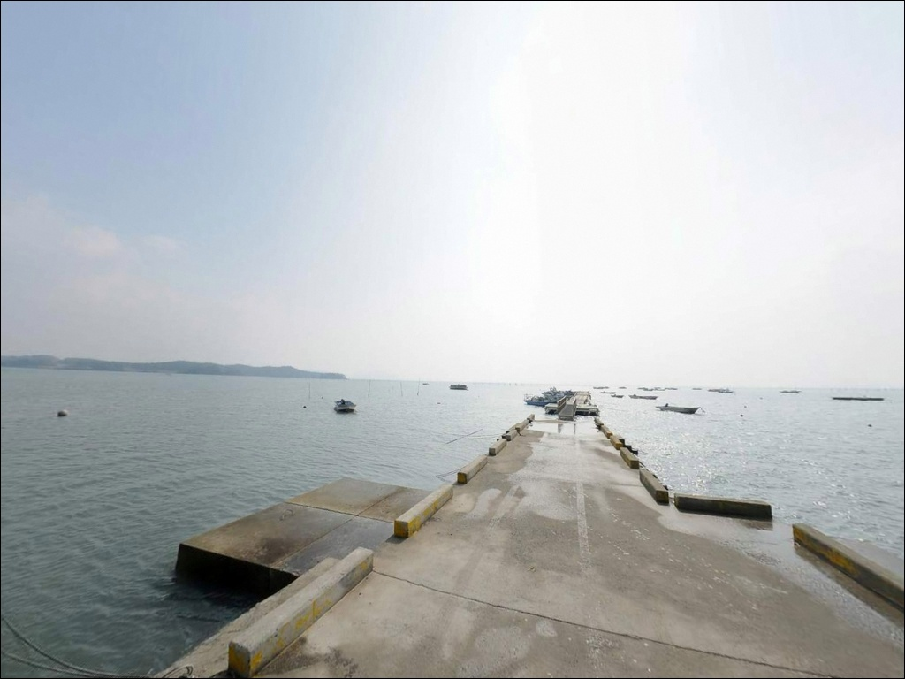
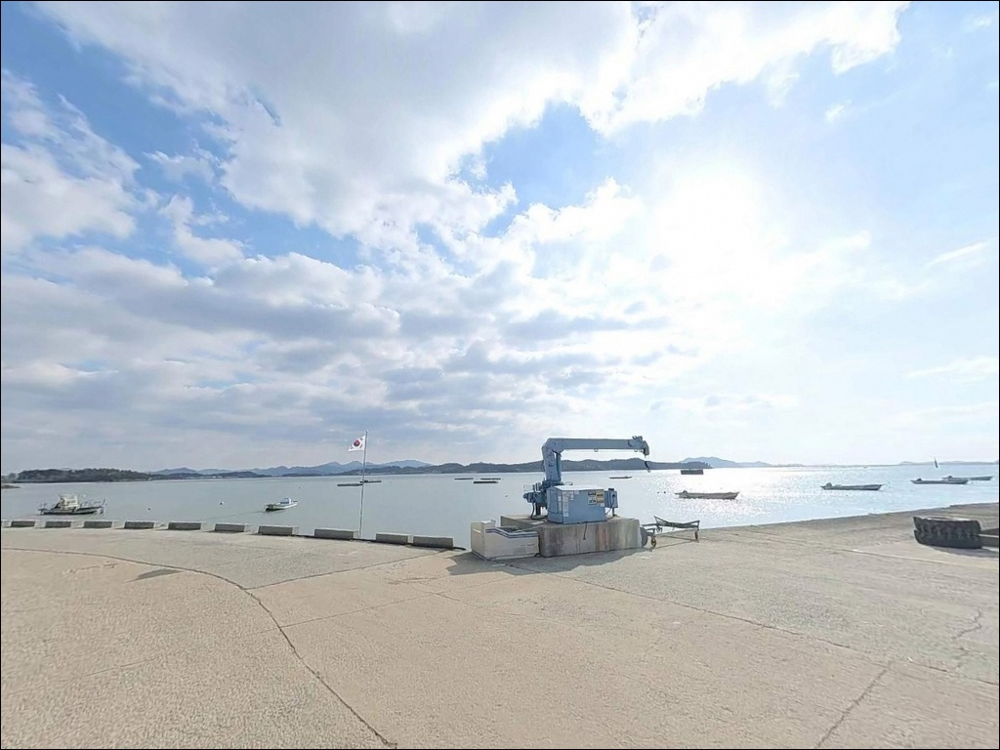

산소항, 전남 해남군 자연의 여백을 느낄 수 있는 차박, 낚시 명소
이 페이지에는 광고(제휴 링크 포함)가 있으며, 광고 링크를 통해 구매하면 운영자가 판매 수익 또는 수수료를 받을 수 있습니다. 포인트 사진: 카카오맵 스카이뷰·로드뷰. 이 페이지의 지도·사진 이미지는 카카오맵의 실제 서비스 이미지와 다를 수 있습니다.


포인트 안내
산소항
전남 해남군 황산면 한자리 716-13
산소항 선착장 앞은 간조 때
수심이 급격히 낮아져
채비를 던질 수 있는 자리 자체가
사라지는 구조입니다.
발판은 있어도 수심이 없으면
낚시 채비가 갯벌 바닥에 닿는 상황을
맞닥뜨리게 됩니다.
해남군 황산면 한자리 해안에 자리한 산소항은
2008년 어촌정주어항으로 지정된
소규모 마을 항구입니다.
한자 선착장 70m, 산소 선착장 100m로
총 170m 규모이며,
서남해안 뻘 지형 내만에
짱뚱어·장어·굴을 주요 어종으로 두는
전형적인 어촌정주어항입니다.
이 글은 산소항의
지형 구조, 물때 조건, 진입 여건,
낚시 방식별 공략 조건에 집중합니다.
조황 단정이나 어종 보장은
이 글의 범위에 포함되지 않습니다.

1. 진입 동선과 포인트 접근 여건
산소항은 황산면 한자리 마을 내부 도로를 통해
진입하는 구조입니다.
마을 안길 특성상
도로 폭이 좁은 구간이 포함되어 있어
대형 SUV나 캠핑 장비를 갖춘 차량이라면
출발 전 위성지도로 진입 경로를
확인하는 편이 안전합니다.
선착장 규모(170m)를 감안하면
내부 회차 공간은 넉넉하지 않은 편입니다.
어업 차량과 작업 구역이 겹칠 수 있어
선착장 접안면 옆 공터나 마을 입구 쪽 공간을
먼저 살피고 자리를 정하는 것이
기본 순서입니다.
어촌신활력사업 일환으로
진입로와 선착장 보강이 진행된 구역인 만큼
현장 도로 상태는
위성지도 기준과 달라질 수 있습니다.
첫 방문이라면 낮 시간에 도착해
동선을 먼저 파악하는 편이 좋습니다.

2. 차박 환경과 야간 체류 여건
산소항은 민가와 인접한 어촌마을 구조입니다.
야간에는 차량 통행이 줄어들어
전체적으로 조용한 편이지만,
마을과 가깝기 때문에 프라이버시는 낮은 편입니다.
낚시를 마치고 잠시 머무는 용도로는
활용 가능한 수준이지만,
차박 자체를 목적으로 삼기에는
공간과 조건이 제한적입니다.
가로등 수는 많지 않을 가능성이 높아
개인 조명 장비는 필수입니다.
내만 구조 특성상 바람 영향은
외해 방파제보다 적은 편이며,
파도 소음도 잔잔한 편입니다.
다만 간조 시 갯벌이 노출되면서 갯벌 냄새가
강하게 올라오는 점은 미리 감안해야 합니다.
주차 공간이 넉넉하지 않고
어선 이동 동선과 겹칠 수 있어
차박 장소를 선착장 접안면 가까이에
잡는 것은 피하는 편이 좋습니다.
마을 입구 쪽 여유 공간이 있다면
그 쪽을 1순위로 살펴보는 편이 안전합니다.


3. 주변 편의시설 및 인프라 현황
산소항 반경 3km 이내에는
편의점이나 대형 마트를 기대하기 어렵습니다.
황산면 한자리는 소규모 어촌 구역이라
완전 자급 체제로 진입하는 것이 현실적입니다.
식수, 얼음, 낚시 소품, 연료 등은
출발 전에 모두 갖춰야 합니다.
주유는 황산면 내 명성주유소(우항리),
부곡주유소(부곡리), 황산주유소(원호리) 등
황산면 내 주유소를 이용할 수 있습니다.
산소항에서의 정확한 거리는
출발 전 지도로 확인하는 편이 좋으며,
도착 후 연료 부족 상황을 만들지 않도록
출발 전에 채워두는 것이 안전합니다.
한자리 일대에 짱뚱어탕을 내는
소규모 식당이 존재하는 것으로 알려져 있으나,
운영 여부는 현장에서 직접 확인해야 합니다.
식사 준비는 자급 기준으로
챙겨 가는 편이 안전합니다.

4. 낚시 효율을 결정짓는 진입 전 준비사항
산소항에서 가장 먼저 확인할 것은
물때입니다.
내만 뻘 지형 특성상
간조와 만조의 수심 차이가 크게 벌어지며,
간조 직전에는 선착장 주변 수심이
채비 운영이 어려운 수준으로 낮아집니다.
바다타임에서 한자리 기준 물때를 확인하고
만조 전후 2시간을 집중 공략 타이밍으로
잡는 것이 기본 전략입니다.
뻘 지형 특성상 밑걸림이 자주 발생합니다.
원투 채비를 준비할 경우
여분 봉돌과 바늘을 넉넉히 챙겨야 하며,
야간 붕장어 원투낚시를 계획한다면
헤드랜턴과 구명조끼는 필수입니다.
마을 선착장 특성상
어선 조업 시간대에는 접안면을 비워두고
어구와 양식장 부표에 채비가 걸리지 않도록
캐스팅 방향을 미리 확인하는 것이 기본 매너입니다.
양식장 부표 너머로는 채비를 보내지 않는
판단이 현장 갈등을 예방합니다.

5. 지형 기반 낚시 여건 분석
산소항은 황산면 한자리 해안 안쪽으로
깊숙이 들어간 내만형 구조입니다.
선착장 주변 해역은
김·꼬막·굴 양식장이 넓게 형성되어 있으며,
항 전면 수역에 수중 암초가 분포한 구간도
있습니다.
2024년 목포해수청이 해당 해역에
등표를 설치한 것도 이 암초 지형 때문입니다.
바닥 구성은 뻘 위주이며,
간조 때는 선착장 주변 갯벌이
넓게 드러나는 지형입니다.
만조 전후에는 수심이 확보되는 구간이 생기고,
선착장 끝단과 항 입구 방향이
상대적으로 수심이 깊어 낚시 가능성이 높은 편입니다.
외해 방파제처럼 조류가 강하게 치는 구조는 아니어서
루어 반응 자체는 제한적인 편입니다.
대신 뻘 바닥 어종을 노리는 방식이
이 포인트 지형과 잘 맞습니다.
공식 등재 어종인 장어(붕장어)와 짱뚱어는
뻘 지형에서 서식하는 어종이라
지형 구조가 이를 뒷받침합니다.
선착장 앞 수심은 만조와 간조 차가 커
물때 확인 없이 진입하면 낚시 자리 자체가 사라지는 포인트입니다.
출조 전에 산소항, 해남 황산면 낚시,
한자산소항 조황 등의 키워드로
최신 조황을 꼭 검색해 보시기 바랍니다.


6. 지형과 어종에 어울리는 낚시 스타일
이 포인트에서 지형 조건과 가장 잘 맞는 방식은
붕장어 야간 원투낚시입니다.
공식 등재 어종인 장어(붕장어)는
뻘 바닥에서 야간 활동성이 높은 어종으로,
만조 전후 물때를 맞춰 봉돌을 멀리 던진 뒤
바닥을 천천히 끌어오는 처넣기 채비가
이 지형에 어울리는 접근 방식입니다.
원투낚시 방식으로는 붕장어 외에
망둥어나 도다리 계열도 기대해 볼 수 있습니다.
뻘·모래 혼합 지형에서 자주 등장하는 어종들로,
가을 시즌에 활성도가 올라오는 경향이 있습니다.
원투낚시란 무거운 봉돌을 사용해
채비를 멀리 던져 깊은 바닥을 공략하는 낚시 방식입니다.
항 내부 잔잔한 수면에서는
찌낚시 채비로 숭어나 잡어를 노리는 방식도
가능합니다.
수심이 확보되는 만조 전후 타이밍에
소형 찌 채비로 항 내 수면을 탐색하는 방식이
부담 없이 접근하기 좋습니다.
짱뚱어는 공식 등재 어종이지만
일반 낚시 채비와 접근 방식이 다릅니다.
짱뚱어 낚시란 서남해안 뻘갯벌에서
짱뚱어를 대상으로 갯벌 표층을 공략하는
특수 낚시 방식으로,
봄에서 가을 사이 갯벌 노출 시간대에
시도해볼 수 있는 계절 방식입니다.
황산면 한자리 일대는 서남해안 뻘 기반 내만으로,
붕장어 야간 원투낚시가 이 지형 조건과 가장 잘 어울리는 방식입니다.

7. 대안 포인트와 플랜 B 동선
산소항 물때가 맞지 않거나
주차 여건이 여의치 않을 때
황산면 내 가장 먼저 이동할 대안은
황산면 성산방파제(외입리)입니다.
같은 황산면 해안선에 위치하며
바다타임에도 등록된 포인트로,
낚시 영상과 조황 정보가 상대적으로
더 많이 공유되어 있습니다.
징의항은 산소항과 같은 해안선에 자리한
인접 포인트입니다.
황산면 한자리 권역 내에 위치해
이동 거리가 짧고,
가을 망둥어 포인트로 언급된 구역입니다.
산소항 조건이 여의치 않을 때
첫 번째 대안으로 고려할 수 있는 동선입니다.
외해 접근성이 높은 포인트를 원한다면
해남 송지면 어란진항 방향으로 이동하는 편이 좋습니다.
어란진항은 방파제 주변 수심 2.5~5m 수준으로
감성돔과 원투낚시 계열 어종이
기대되는 포인트입니다.
산소항과 성격이 다른 외해형 포인트로,
더 다양한 낚시 스타일을 원할 경우
이 방향으로 이동을 검토해 볼 수 있습니다.

조용한 뻘 포인트를
제대로 공략하려면
물때가 먼저입니다
붕장어 야간 원투낚시를 즐기는 낚시인이라면
산소항의 뻘 지형 조건이
잘 맞는 구조입니다.
외해 방파제처럼 활성도 높은 루어 반응은
기대하기 어렵지만,
내만 뻘 포인트 특유의
조용하고 차분한 낚시를 원하는 분께는
한 번쯤 탐색해볼 만한 곳입니다.
반면 물때 확인 없이 진입하거나
간조 타이밍에 도착하면
선착장 앞이 갯벌로 바뀐 상황을
맞게 됩니다.
물때 확인, 자급 준비, 위성지도 진입로 확인,
이 세 가지가 산소항 방문 전
기본 조건입니다.
인프라 없는 조용한 어촌마을에서
뻘 내만 앞에 자리를 깔고
야간 원투 채비를 던지며 하룻밤 머무는
차박 여행자라면,
마을 주민과의 매너를 지키며
낚시와 차박을 조용히 즐기기에
나쁘지 않은 포인트입니다.